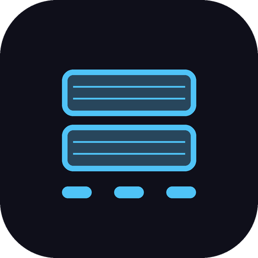

Finding the edge. Building the logic.
Reality systems prototyper: observing how things actually work at the point of contact, and building the working tools that make them hold.
The missing piece
The floor work; logs compounding into domain pages, Stacked on shift, InventoryVision, the voice path, Bay Door, the management probe; led me to a working hypothesis.
Wherever matter moves at scale, AI capability is rarely the bottleneck. Someone still has to judge which problem to point it at, know what survives contact with a real floor, and trigger the thing so it ships. That complementary half is what I’ve been practising without a clean job title for it.
The role shows up under different names in every sector. Keyword search fails for that reason. The portfolio is the evidence trail: composition on the floor, thin wrappers at brittle steps, site-shaped vision, a personal tool that only becomes more if usage is real.
I’m looking for the seat where that hypothesis is the job.
On the floor

Stacked on ShiftI started as a picker in a beverage 3PL warehouse. After shifts I logged what had surprised me or made me wonder why. Those notes became a system: field logs in, domain pages out. Later observations started landing on earlier ones. That compounding is how I learned the floor: picking, voice kit, waves, exceptions, how work actually moves.
Stacked github.com/k-saicharan/stacked-public ↗
From those logs came Stacked (about ↗ · join pilot ↗): a phone app I use on shift to log pallets, watch items-per-hour live, and keep rotating schedules straight. Local-first. Optional anonymous sync.
Upstream is a clean personal record of what the shift produced while I was still in it. Downstream, if usage grows, those logs become material for harder picking questions: sequences that serve aggregate throughput, with the worker as an input rather than the whole target. That thread stays open until the data is real.
Voice github.com/k-saicharan/sap-voice-middleware ↗
Spoken quantity confirms are the brittle step under warehouse noise. I traced the failure to the speech layer sitting on the warehouse system, then built a thin middleware demo that corrects before the core stack sees the utterance; core left untouched. Later a language-pack path opened. Proposed and researched. Stacked is what I run; this path is direction until a site moment installs something.
Bay Door
Bay Door started as a “this should be simpler” instinct on the floor, then became a correction arc: the process looked clean on paper until attention rewrote what the aisle actually cost. It went into a management conversation as research. Same pattern as the rest of the floor work; deciding fact and decision place out of line.
Where the floor work points
On the floor, the deciding fact often already sits in the stack. The decision still happens somewhere else. What’s missing is composition at the moment you need it. A conversation with site management mapped where attention could land next; handover visibility, damage logging, voice. Stacked is what I run on shift. The wider thread waits for an owner and a site moment.
InventoryVision inventoryvisionhub.co.uk ↗
One of the jobs on a fulfilment floor is counting nested Euro totes by hand. Thin lips stacked on thin lips. Easy to miss one. Tedious.
I built a small counter that looks at a stack and returns a number. The breakthrough wasn’t more physical hints in the prompt. It was making the model name each lip, top to bottom, before it was allowed a final count. That got to 69% exact and 100% within one tote on the test set.
What it pointed at is bigger than a counter. Physical storage and the system of record drift apart. Closing that gap is the real job.
Vision is how the floor gets seen; physical state only. Identity of a unit stays a separate, exact step. Every warehouse is its own environment: layout, lighting, labels, how stock moves, what the record already trusts. The interesting work is pairing that site-specific shape with AI.
What I’m searching for next in this build is an agent that takes the floor information it needs and returns the best customisation for that site.
This is free-time founder work; nights and gaps after shifts; building toward a real product, not a side demo for a CV.
Systems brief: Pixel order stuck Case study ↗
Pixel order stuck across six systems; living brief, role hats, structural gap. Maps actual vs intended flow across checkout, payment, order management, warehouse, carrier, and support when no single team owns the handoff seam.
Right meaning, wrong number Open eval ↗
Speech models are scored on word error rate. In a voice confirm, the only words that matter are the numbers. A 50-item Hindi-English test set and scoring protocol for spoken quantities, fractions, self-corrections ("nahi"), and check digits under warehouse noise. No audio is recorded and no model has been scored yet.
Two deposit schemes, one island Open memo ↗
From 1 October 2027, Northern Ireland packs carry their own deposit too. For all-island drinks distribution, the warehouse risk changes from "deposit vs none" to picking or shipping "the wrong deposit" across a land border.
Floor flow to EWM gap pack Open template ↗
When a warehouse moves from SAP WM to EWM, its data migrates but its handheld scanner logic does not. A template for turning observed picker flows into a SAP EWM fit-gap list before the first workshop. Needs five real flows before it counts as site proof.
The ghost shelf Open artifact ↗
Shopping ads usually learn about stock from a feed that refreshes about once a day. Between a product selling out and the feed catching up, the ad keeps running. In that gap, money buys disappointment. (97% figure from a ShoppingIQ study of 500 retailers via Search Engine Land; vendor-sourced figure.)
CareKit (working name) care-diary-uk.vercel.app ↗
A care diary for families looking after an ageing parent in England and Wales. Log the help you give in seconds, and it becomes a dated written record in your own words.
Heard heard-ten-puce.vercel.app ↗
A diary for endometriosis and pelvic pain that turns 10-second daily logs into a plain summary to take to a GP appointment.
Autopilot
I built Autopilot as my life OS; an execution layer on top of agents and skills I wrote myself. The problem it solves is simple: every new session starts blind, and anything I only held in my head rot. Creative work stays mine. Everything else I wanted a system that could hold context, move what is movable, and bring me only the calls that need judgment.
Board is the single face for anything that needs me. Priorities and Window hold what matters and what time is actually free. On demand, Autopilot sweeps the rails, reconciles trackers when they drift from reality, advances research and drafts freely, and stalls on irreversible sends and judgment. Answers cascade into every file they touch. Sessions that never invoke Autopilot still write board-worthy state before they end; so the next wake inherits truth.
Under that sits logging. Every project gets a running log. I run /log across sessions, hosts, and domains so decisions, opens, and residue compound when the chat closes. OpenAI’s agent sessions and Anthropic’s Claude Code transcripts treat that persistence as built-in; seeing that made the instinct feel spot-on. Continuity is the product.
Xenrich and Insight Radio sit beside this as skills in the same Systems layer. Autopilot is the OS that keeps the runway clear around them.
Skill: autopilot
Anonymised skill; copy into your agent skills folder as SKILL.md.
---
name: autopilot
description: Execute an on-demand Autopilot system; sweep non-creative fronts, reconcile trackers, surface blockers onto a single Board face with detail in a control-plane store.
registry: true
portable: true
---
# /autopilot: Execution layer
Execute the Autopilot system; sweep all non-creative fronts, reconcile trackers to current truth, surface blockers onto the Board (face) with detail in Autopilot.md (store).
---
## Key paths (adapt to your vault)
- **Board (face; read/write first):** `your-vault/Get Shit Done/Board.md`
- **Control plane:** `your-vault/Get Shit Done/Autopilot.md`
- **Priorities:** `your-vault/Get Shit Done/Priorities.md`
- **Window:** `your-vault/Get Shit Done/Window.md`
- **Systems face:** `your-vault/Systems/Home.md`
- **Vault root:** `your-vault/`
- **Execution folder:** `your-vault/Get Shit Done/`
---
## Step 0a: Board first (before anything else)
**Board is the single index for anything that needs the user.** They answer only under *Needs you* (`context:`), or at a location a Board row points to (e.g. xenrich Staging, note verdicts). Never treat Autopilot, Home, or STATUS as the answer surface. Autopilot has no fillable blanks; every detail block ends with "answer on Board."
Read `Board.md` in full.
0. **Machine dirty-check (before claiming untouched):**
```bash
BOARD="your-vault/Get Shit Done/Board.md"
# If Board file mtime is newer than frontmatter last-processed, user wrote since last ingest.
# Parse last-processed from YAML; compare to mtime. If dirty → must ingest.
# Never infer "untouched" from Autopilot.md alone.
```
If `mtime(Board.md) > last-processed` (frontmatter), Board is dirty: ingest fully. **Do not open Autopilot looking for answers.**
1. **Ingest ticks:** any `- [x]` items → cascade into Priorities/Window/Autopilot ANSWERED, then **remove them from "Needs you"** (open section holds open rows only). A tick with empty `context:` is **not** an answer if the item required numbers/a decision; re-open or flag.
2. **Ingest `context:` lines** that are non-empty → act/unblock. Do not re-ask what was already answered.
3. **Write agent verdicts in the Run log**, not multi-paragraph blocks inside open Needs-you rows. After processing an answer: slim the open row to what is still theirs, or tick+move off if fully done.
4. **Update `last-processed`** (ISO timestamp) and re-derive frame (shift line, hard-date ages, `[open Nd]`) whenever you bump `updated:`.
5. Only after this pass: load Autopilot policy and sweep fronts.
If Board is stale vs Priorities, fix Board during this run. Board must not lie.
### Human-ask rule (every front)
If a skill or sweep needs the user: write **one Board row** under Needs you (tag + one-line ask + blank `context:`). If the answer must live elsewhere (bulk Why lines, per-note verdicts), the Board row **links that place**; they still own the row until ticked. Never ask only in STATUS, Home, chat, or Autopilot.
---
## Step 0: Git snapshot (before touching anything)
```bash
VAULT="your-vault"
cd "$VAULT" && git add -A && git commit -m "autopilot: pre-run snapshot $(date +%Y-%m-%d\ %H:%M)" 2>/dev/null || echo "git snapshot skipped (not a repo or nothing to commit)"
```
---
## Step 1: Idempotency check
Read the RUN LOG section at the bottom of `Autopilot.md`. Find the timestamp of the most recent run entry.
Then check the mtimes of the four key files (Board, Window, Priorities, Autopilot).
**If all four mtimes are older than the last run entry AND the run log says "nothing to move" or "no drift":** append one line to the RUN LOG; `- **<date> (run):** Nothing changed since last run; skipped.`; then stop. Do not re-sweep.
Otherwise proceed.
---
## Step 2: Load the policy
Read `Autopilot.md` in full. The THE POLICY section governs what you may advance freely vs. what must stall to the queue. Load it now; it applies to every action from here forward.
Also read the SAFETY guardrails section. Hard limits on what you may write, delete, or modify.
---
## Operating principle: context depth governs every front
Before acting on any item, on any front, assess how much context exists:
- **Rich context** (tracker entry is specific, vault note has detail, recent activity is clear) → **act first.** Research, draft, produce the artifact. Show the result after.
- **Thin context** (vague note, missing data, no recent signal) → **ask one targeted question.** Get the answer, then act.
This is not an ideas-only rule. It applies equally to every front. Never ask permission for things you can derive. Never act blind on things you can't.
---
## Step 3: Standing job: freshness + drift check
1. Read Window.md and Priorities.md in full.
2. Note when each was last modified (mtimes from Step 1).
3. Check for **drift**: does what the file claims match the timestamps? If Window was last edited 10 days ago, treat everything in it as potentially stale.
4. Check mail and calendar (via available tools) for signals the trackers may have missed; new confirmations, new deadlines, replies that changed status.
5. If you detect drift; a file's claim contradicts observed activity or recent mail; flag it. Don't silently trust the stale file. Queue a reconciliation question if needed.
6. Compute the current shift from the SHIFT CONTEXT section in Autopilot.md (deterministic; no need to ask). Update the shift field in Window.md if it's wrong.
---
## Step 4: Sweep the fronts
Work through each front configured in your Priorities / Autopilot policy. For each one: read the relevant tracker section, check for deadline movement, check for available research or draft work you can advance. Apply the policy (advance freely vs. stall and ask).
Adapt the front list to your life. A typical non-creative set looks like:
### Front 1: Admin / compliance deadlines
- Check milestone state and deadlines within ~30 days.
- Advance: research, draft prep, document status updates in Priorities.md.
- Stall: anything requiring account access, a final submit, or spending.
### Front 2: Current-role internal growth
- Check learning plan / cert / internal path progress.
- Advance: research, path updates, tracking open actions.
- Stall: reaching out to a specific person (that's the user's voice).
### Front 3: Job hunt (parallel pipeline)
- Check pipeline state via your job-hunt tracker or Priorities.md.
- Surface deadlines and next actions.
- Advance: tracker updates, research on roles, draft prep.
- Stall: submitting applications, sending emails.
### Front 4: Finance
- Check open items (statements, upcoming payments, leak surfacing).
- Advance: tracker updates, math, surfacing issues.
- Stall: family or shared-money levers; always the user's call.
### Front 5: Idle built assets
- Side projects / prototypes already built; deploy/positioning status of each?
- Advance: research, deployment status tracking, positioning notes.
- Stall: anything requiring credentials or a live deployment decision.
### Front 6: Creative runway (non-judgment work only)
- Contest/festival calendar, free-entry deadlines, web presence tasks.
- Advance: deadline watch, calendar entries, research.
- Stall: anything requiring creative judgment or the user's voice.
### Front 7: Ideas bucket / vault handoff
- Check items in your vault Inbox or Void-equivalent log marked as needing autopilot attention.
- Scan the git snapshot diff from Step 0: any new vault notes this run with a non-creative actionable signal (a tool to buy, a practice to start, a device to research)? Research and write findings **back into the origin note** under a labelled section. Do not route to Priorities by default.
- Surface these in the Step 10 report. If research requires judgment first, ask one question in the report; not as a Board flood.
- Stall: anything ambiguous; drop it in the queue with context.
---
## Step 5: Apply the cascade rule
For every update you make: propagate to **every core file the update touches**, not just the nearest one. An update to a deadline in Priorities should also hit Window if Window references it. An answered question in the DECISIONS queue should flow to every tracker it affects.
Shallow propagation (one file) is the failure mode. Don't do it.
---
## Step 6: Save artifacts to the vault
Any artifact produced during this run; research brief, comparison, draft, recommendation, feasibility note; must be written to the vault before the session ends. It does not live in the chat window.
**Where artifacts go (within the write allowlist):**
- Research that enriches a specific vault note → **append to that origin note** under a clearly labelled section.
- Front-specific drafts → append to that front's `log.md` or save in its folder.
- Genuinely new standalone artifacts with no origin note → a working-notes folder in your vault.
- Do not default to the execution folder for things that clearly belong to an existing note.
**Run log must reference it:** the RUN LOG entry includes the file path of every artifact saved.
---
## Step 7: Write blockers to Board (face) + Autopilot detail (store)
For every item that stalls and needs the user:
1. **Board first**; add or update one checkbox line under `## Needs you` in `Board.md`:
```
- [ ] **[front]** **short ask.** one line of stakes. → [[link]]
- context:
```
Cap Board at ~10 open items. Overflow collapses into one Board line pointing at Autopilot detail.
If the item creates a real cross-front link, add one line to a Weaves section. If it is a hard date, add one line to Hard dates. Do not invent weaves for everything.
2. **Autopilot detail**; add/update the matching block under `## DECISIONS FOR YOU` in `Autopilot.md`:
```
### [front] short question
Why it's stalled: one line.
Options if any: a / b / c.
**Your call:** ____
```
3. **Systems/Home.md**; if this run changed a skill queue count (xenrich staging, radio seeds, inbox), bump the relevant row + `updated:` date. Do not dump life tasks onto Home.
Be surgical. One question per real blocker. Board is the face; Autopilot is the store.
---
## Step 8: Git snapshot (after)
```bash
VAULT="your-vault"
cd "$VAULT" && git add -A && git commit -m "autopilot: post-run snapshot $(date +%Y-%m-%d\ %H:%M)" 2>/dev/null || echo "git snapshot skipped"
```
---
## Step 9: Append to RUN LOG
Append one terse, dated line to the `## RUN LOG` section of `Autopilot.md`:
```
- **<YYYY-MM-DD> (run):** <what moved> / <what stalled> / <# of questions queued>.
```
Keep it to one line. The log is a pulse, not a report.
---
## Step 10: Report back
Tell the user: what moved on each front (or "nothing to move"), how many open items are on **Board**, and one sentence on anything urgent. Point them at Board, not Autopilot, for answering. No padding.
If Front 7 produced actionable vault signals this run: list them and the origin files updated. Keep the confirmation loop to a single exchange.
Skill: log
Anonymised skill; copy into your agent skills folder as SKILL.md.
--- name: log description: Write a session log entry for the current project. Captures voice, decisions, opens, and residue so continuity compounds when the chat closes. registry: true portable: true --- # /log: Session log Write a session log entry for the current project. --- ## What this skill does Captures the current session; the user's voice, decisions made, things found, things opened; and appends it to the project's log file. If no log file exists, creates one. Works on any project: code, creative, vault notes, research. --- ## Step 1: Find the project Determine the active project from context: - If working in a code repository: the project root (where `.git` or project instructions live) - If working on a vault/creative project: the project folder referenced in this session (e.g. `your-vault/Projects/[ProjectName]/`) - If working on something without a clear folder: the primary file or directory that was the focus of the session - If ambiguous or no project can be identified (meta-conversations, workflow discussions, one-off explorations): use a global session log at `your-vault/Sessions/log.md`; do not ask ## Step 2: Find or create the project folder and log file **First, establish a project folder.** The log must never be an orphan file floating in a parent directory. - If the project already has a dedicated subfolder: use it as the home. - If the project is currently a single `.md` file in a parent directory: create a subfolder named after that file (same name, no `.md` extension), move the original file into it, and treat that subfolder as the project home. No orphans; both the project file and `log.md` live inside the folder. - If the project is a code repo or has a clear root folder already: use that root as the home. **Then, look for `log.md` inside that project folder.** If it exists: read the existing structure so the new entry matches the established format. If it doesn't exist: create it inside the project folder with this header: ``` # [Project Name]: Session Log *Raw record. Not organised. Not polished. Preserved as-is.* --- ``` ## Research & session output filing rule When a session produces research, analysis, or meaningful output on a specific idea or project: - File it **inside that idea's own folder** (e.g. `project-folder/Research.md` or `log.md`). - Never dump research into a generic catch-all research folder; it becomes untraceable. - If the idea has no folder yet, create one under your ideas/projects path and place the output inside it. - This protects the time invested in the session. Research always travels with the idea it belongs to. Update the log entry to reference any new research file created inside the project folder. ## Step 3: Write the session entry Append a new session block to the log. Format: ``` ## Session [N]: [YYYY-MM-DD] --- [Session content; see rules below] --- *Log continues in future sessions.* ``` If a previous session already ends with `*Log continues in future sessions.*`, remove that line from the previous entry and place it only at the end of the new one. **Rules for session content:** - **Voice:** Write in the user's voice where they spoke directly. Use blockquotes (`> `) for their actual words; transcribed, not paraphrased. Fill in the connective tissue between their statements so the entries make sense standalone without being a Q&A transcript. - **Capture decisions, not process:** What was decided, what was locked, what was discarded. Not every message exchanged; the residue that matters. - **Capture what was opened:** Questions that came up but weren't answered. Directions that were named but not pursued. These matter as much as what was resolved. - **Capture outputs:** Files created, files changed, delegations made, tasks written. Name them. - **If the session was exploratory:** capture what territory was covered and what the session landed on, even if nothing was decided. - **Length:** Match the density of the session. A short session gets a short entry. A long session gets a full record. Don't pad, don't compress beyond recognition. ## Step 4: Report back Tell the user: the log was updated (or created), the file path, and one sentence on what this session's entry captured.
Closing the loop
A cell carries the whole book and only reads the chapter that matches where it is and what signals are arriving; position decides expression; the rest stays quiet. That picture got into how I learn: when something lands, I decide what it is for inside the threads I am already in, put it there with the trail attached, and clear it so the next signal can land clean.
When something on X hits hard enough to save, it is already a vote. I sort it into a world as I save it. Later I answer what made me save that one, connect it to the threads I am already inside, and file it with the link still attached; then the bookmark goes. The queue is only what is still open. The trail lives in a ledger. Xenrich is the skill that runs that loop on my own bookmarks.
I treat the feed the same way. Abundant information creates a poverty of attention; algorithms hold that scarcity well. My working hypothesis is that the useful move is directing what gets expressed; small, contextual next steps when something sparks; so consumption compounds into action and agency.
Skill: xenrich
Anonymised skill; copy into your agent skills folder as SKILL.md.
---
name: xenrich
description: |
Bookmark enrichment in two phases. Phase 1 (stage): fetches bookmarks from topic
folders plus the unfoldered queue, reads each linked resource fully, and writes a
per-folder staging note in your vault with a blank Why line per item; no filing,
no deletion yet. Phase 2 (process): reads whatever Why lines have been filled in,
connects the answer to active life threads, and files the result (vault note,
per-project Signals.md line, task, or lead) before deleting the bookmark. Activate
Phase 1 on "/xenrich", "check my bookmarks", "stage my bookmarks". Activate Phase 2
on "/xenrich process", "process the staged bookmarks", "xenrich is ready".
registry: true
portable: true
---
# /xenrich: Bookmark Enrichment
**Pipeline face:** `Systems/Xenrich/Xenrich Board.md` (or equivalent in your vault). Read it first on every run (Phase 1 or Phase 2). Rewrite its counts in the same pass as Staging. It is the cascade map, not a second inbox: Why lines stay in `Staging/`; the human index stays on your main Board. Same split as any domain board vs the single Board face.
You bookmark posts as a signal: "this matters somehow." The skill closes that loop; folder as filter, Why as enrichment, ledger as trail after the bookmark is gone.
## The design
Folder = which world an item belongs to, chosen by you at save time. That's a **filter, not an instruction**; it narrows which question to ask and which destinations make sense, it does not tell the skill what to do on its own. The actual enrichment; why you saved this specific post, what struck you about it; still has to come from you per item. The folder just scopes that conversation instead of running it cold.
Example folder taxonomy (adapt names/IDs to your bookmark tool):
- **Job**; role leads AND hiring/career-approach content; only unambiguous role postings skip the Why entirely
- **Creative**; craft, narrative, industry signal
- **AI & Tech**; tools, industry shifts, timing conviction
- **Business Ideas**; candidate ideas for your ideas bucket
- **Everything Else**; deliberate call that something doesn't fit the first four; still a categorization decision
- **Unfoldered**; anything bookmarked but not placed in a folder. NOT an error and NOT the same as "Everything Else." On many platforms, bookmarking lands here by default; adding to a folder is an extra step. Unfoldered means no categorization decision was made. Always check for these.
Every folder is a live to-process queue, not an archive. Processing always ends in deletion: either the source link traveled into something filed (vault note, task, lead), or the item was dismissed. Whatever is still sitting in a folder is, by construction, everything not yet processed.
**The ledger (`Systems/Xenrich/ledger.md`).** Deleting the bookmark removes the browsable list of "stuff I saved." The ledger replaces it: an append-only file where EVERY processed item lands one line; kept or dismissed; with its source link and where it went. Name it *ledger*, not *log*; `log.md` in the same folder is the session log; this is an index/register. It is an index, not a store; real content lives at its filed destination; the ledger guarantees the link and a trail always exist in one findable place.
## Two phases, one flow
Bookmark-saving happens on the platform; the thought about *why* it mattered arrives whenever it arrives. Forcing both into one synchronous pass degrades into "I don't remember." So xenrich runs in two phases:
- **Phase 1; Stage** (`/xenrich`, "check my bookmarks", "stage my bookmarks"): fetch, read, triage, write a staging note per folder with a blank `Why:` line per item. No filing, no deletion.
- **You fill in the Why lines**; directly in the staging note, whatever length, whenever the thought is there.
- **Phase 2; Process** (`/xenrich process`, "process the staged bookmarks", "xenrich is ready"): read whatever's filled in, enrich, file, delete the bookmark, log the ledger line. Items still blank stay staged; never nudged, never auto-dismissed.
Staging notes live in `Systems/Xenrich/Staging/`, one file per folder (`<folder>--<date>.md`). If a staging file already exists from an unfinished stage, Phase 1 appends; it never clobbers whys already written.
## Phase 1: Stage
1. **Fetch**; use your bookmark API / CLI (authenticated as your account). Prefer a reliable CLI path over a flaky MCP when both exist.
- Per folder: list bookmark IDs in that folder.
- Full bookmark list (to diff for Unfoldered): fetch recent bookmarks with text/entities where the API allows.
- Diff full-list IDs against the union of folder IDs; remainder is **Unfoldered**.
2. **Scope Unfoldered by recency before processing.** Unfoldered can contain years of pre-system bookmarks. Pull timestamps and look for the natural gap (recent cluster, then a jump back). Confirm scope with the user if ambiguous; don't silently process a multi-year tail.
3. **Read each item fully; no skimming the preview.**
- If the post contains a URL, fetch and read the actual page before staging.
- For platform-native long-form: prefer the API body over a browser login wall.
- Quote-posts / replies: pull the referenced post too so full context is in hand.
4. **Triage before staging.**
- **Low-signal / dismiss-by-default**: pure reaction/hype with no connective tissue to an active thread. Single compressed staging line; no blank Why; user overrides in one word if they disagree.
- **Worth the question**: anything that plausibly connects to an active thread. Full staging block with blank `Why:`.
- When unsure, default to the full block.
5. **Job-folder fast path only:** unambiguous role postings (title, apply-by, requirements, "we're hiring") skip Why; route into your job-hunt pipeline, file, ledger, delete. Hiring-trend / career-approach content still stages.
6. **Write the staging note**; `Systems/Xenrich/Staging/<folder>--<date>.md`.
- Worth-the-question: link/title, one sharp sentence grounded in full content (shaped by folder world), blank `Why:` line.
- Low-signal: compressed line, no Why.
- Unfoldered: fully open; ask both which world AND why.
7. **Output**; per folder, counts only (staged N, auto-dismissed M). Close with reminder that Phase 2 runs when the user says so.
8. **Board index (mandatory if any Why blanks remain):** one row on your main Board under *Needs you*:
- `- [ ] **[xenrich]** N Why blanks in [[Staging file]]; fill there, then tick this row.`
- Blank `context:` on the Board row.
- Do **not** ask only in STATUS or chat. Board is the single index; Staging is where bulk Why lines are filled.
- Rewrite `Xenrich Board.md` in the same pass.
## Phase 2: Process
1. **Read the staging notes**; everything in `Systems/Xenrich/Staging/`.
1a. **Recurrence check; BEFORE deciding any destination.** Per-item routing shreds a subject that keeps coming back across destinations.
- Search the ledger for the item's subject, product, or author before filing.
- If a folder already exists for that subject: route there. Check its STATUS first.
- If this is the 3rd-or-later hit and no folder exists: stop and surface it. User decides; never auto-create.
- Distinguish an object (product/tool/company) from a thesis (usually a section inside an existing folder).
- If a folder does get opened, collect scattered prior mentions in the same pass.
- Two hits is not a thread. Note it, don't act.
2. **For each item with a filled `Why:` line; enrich, don't just log the answer:**
- Connect the reason to what's already active (job pipeline, creative threads, tech timing, ideas bucket, current work context); say what this connects to.
- Decide the actionable shape: vault note / task / lead / follow-up / research deeper / consciously park / nothing needed. Every shape except "nothing needed" results in something filed.
- **Existing project/idea folder**: append ONE line to that project's `Signals.md`; never the main strategy doc. Format: `- [date] [title](link); one-line why-it-matters. Status: unevaluated.`
- **Nothing existing matches**: one-line task on your execution board (not an orphaned vault catch-all).
- Full vault notes only for things that warrant real synthesis; live with the idea's own folder.
- Respect hard-skip zones in your vault (journal, dreams, private creative drafts); surface findings instead of auto-writing.
- **Bridge to Insight Radio:** if dense/public learn-worthy material, drop an Insight Radio seed tagged with its **world** (same taxonomy). Private-strategy items skip.
- **Bridge to a "To Know" queue:** if the Why is a person or work to check, leave a thin capture card (name, where, must-check); not a biography.
- **File** with the source link included so the trail survives bookmark deletion.
- **Record in the ledger** (before deletion):
`- [YYYY-MM-DD] [title](link); [folder] → landed: <destination> | <one-line why / disposition>`
- **Delete the bookmark** once filed and logged.
- **Remove that item's block from the staging note.**
3. **Blank items**; leave exactly as staged. Don't nudge.
4. **Low-signal lines**; dismiss per default unless user wrote an override; ledger + delete.
5. **Housekeeping**; delete empty staging files.
6. **Output**; two to three lines per processed item (what / which thread / where it landed). Close with what's still staged per folder.
7. **Board index after Phase 2:** clear or update the `[xenrich]` Board row; rewrite `Xenrich Board.md`.
## Tone
Not a summary machine. You're a thinking partner reading what caught their attention; full source, not the preview. The folder tells you which world to think in; it doesn't answer "why did YOU save this, and what does it want to become?"
If a folder is empty, say so plainly and move on.
Dictation exhaust
Years of MacWhisper push-to-talk left a local SQLite trail; timestamp, text, target app. That history became a personal corpus: intentional speech-to-tool exhaust. From it: computer-use demo episodes, re-prompt friction scores, and a private command lexicon.
Clean and Seal
Small scratches get ignored because clean and cover are two separate fiddles. A pocket dual stick puts tear-wipe and a liquid-plaster dose in one pass, as a carry-first single-use multipack. The bet is readiness and a forced clean-then-seal sequence; chemistry that already works, carried so it gets used.
Shankha Alarm
The industrial beep felt wrong for what a morning should open with. The idea became a real conch shell sounded by air; a recording would miss the point. Work went simulation-first: BEM acoustics, blowing threshold, quiet pump and accumulator. Presentation stayed sacred: open on a peeta by default.
Net Saver / EntangleSafe
Inland fishing nets can trap a wader and pull them under before anyone hears a struggle. The brief stayed on that quiet drowning, then narrowed to a cheap collar-level hydrostatic buoyancy prototype. The open question is whether buoyancy frees a body under real net tension.
“A portfolio built like an active mind does not stop at one domain. The thread running through this work is never what is being thought about, but how: meeting ground reality directly, isolating the unexamined friction, and building the working logic that closes the seam.”